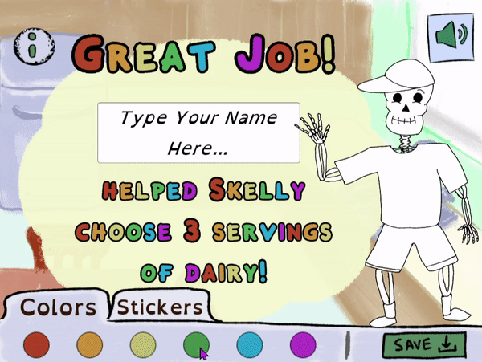
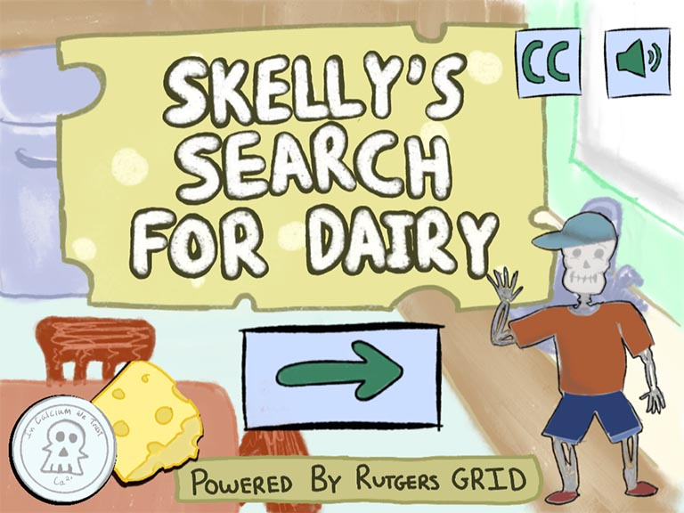

Skelly's Search for Dairy is the first of a game series. Clients were creating a variety of games in order to educate children(ages 5 and up) on the importance of their diet.
The direction for the visuals were to focus on creating a pastel aesthetic with bubbly and engaging color themes.
The game became based on a skeleton mascot named Skelly. Players join on him on his quest to collect Calcium coins in order to strengthen himself. Coins are earned based on answering questions
about food items such as choosing snacks and drinks that contain dairy. The main message of the game is to show children that in order to lead a healthy and active lifestyle, they need proper
nutrition to support themselves.
Part of my role in this project included collaborating with other developers to work on storyboarding and direction. This was important because many of the items I created for this game required
animation processes to flow correctly on the screen. As seen in the videos below, an animation is triggered once a player choose the right answer. The skull starts chewing the coin and the meter gets filled further.
Transitions and short animations were used to provide more education about dairy. I created scenic assets to tie together elements of the game.
An important part of this project was an assessment of the students playing the game. A post game certificate activity rewards players and singals to teachers completion of the quizze.
It allowed students to express themselves with stickers and coloring the page. In the end, the game delivered an educational experience about dairy and its nutrients.

